1. データセット
| 項目 | 値 |
|---|---|
| 収集 plan | plans/full_32_train.yaml（gen32_train.py で生成） |
| 励振パターン | noise_2s_prbs（PRBS ホワイトノイズ、SPK 駆動） |
| 音量 | 3 %（ADC クリップ回避の実績値） |
| 状態数 | 32（5 ドアの全開閉組合せ） |
| 1 状態あたりフレーム数 | 30 |
| 総フレーム数 | 960（32 × 30） |
| 1 フレーム長 | 2.0 秒 / 16 kHz / 16-bit mono |
| 収集所要時間 | 約 35 分（壁時計） |
| 保存先 | pc/captures/full_32_train_v1/ |
データ健全性は事前に analyze_full32_train.py で確認済み: フレーム内 σ は全 32 状態で 0.41–0.51 dB に揃い、A vs B vs C の大分類は 4 dB の余裕、 C 系最近傍だけ 0.8–1.1 dB と margin 薄め。詳細は noise 計測ページ §5 を参照。
2. 特徴量 — Welch スペクトル
PRBS 励振では時間-周波数構造が無いので、chirp 経路（matched filter で RIR 抽出）は使えない。
代わりに 2 s の波形を Welch 法で平均パワースペクトル化して 1024 bin
log-magnitude 特徴量に変換する。実装は
pc/training/features.py の
samples_to_noise_features()。
| パラメータ | 値 | 備考 |
|---|---|---|
| 窓関数 | Hann | サイドローブ抑制 |
| セグメント長 | 2048 sample | 128 ms @ 16 kHz |
| オーバーラップ | 1024 sample | 50% |
| セグメント数 | 30 | 2 s 中で平均 |
| 出力ビン数 | 1024 | rFFT 1025 ビンから DC を除外 |
| 正規化 | 10·log10 + mean-subtract | chirp 経路と同じシグネチャ |
| フロア | -80 dB | log の発散防止 |
入出力形状（1024 次元 float32, 平均 0）は chirp 経路と完全一致。 したがって 1D-CNN backbone は 2 つの励振方式で共有でき、 device 側 (MCXN947) でも PowerQuad-FFT を Welch に流用すれば同じパイプラインで動かせる見込み。
3. モデル — IchiPingV1_32cls
実装は model_32cls.py。 共有 backbone (Conv1D × 3 + BatchNorm + GAP) の上に 32-class softmax 単ヘッド。
| 層 | 形状 | 備考 |
|---|---|---|
| 入力 | (B, 1, 1024) | log-magnitude スペクトル |
| Conv1D 16ch / k=16 / s=4 | (B, 16, 253) | + BN + ReLU |
| Conv1D 32ch / k=8 / s=4 | (B, 32, 62) | + BN + ReLU |
| Conv1D 64ch / k=4 / s=2 | (B, 64, 30) | + BN + ReLU |
| Global Average Pool | (B, 64) | 時間軸方向に平均 |
| Dropout 0.3 | (B, 64) | 過学習対策 |
| Linear 64 → 32 | (B, 32) | state index logits |
パラメータ数 14,960（≒ 60 KB FP32 / 15 KB INT8）— MCXN947 の SRAM に余裕で乗る規模。
ヘッドが 32-class なのは
NN 設計 §なぜ 14-class softmax 単ヘッドなのか
と少しズレるが、現状の model_32cls.py は等価クラス内サブ構造を
モデルが拾えるか確認する実験用設計。評価時に class_of() で 14-class に
畳み込んで本来の指標に変換している。
4. 学習設定
| 項目 | 値 |
|---|---|
| Optimizer | AdamW (lr 1e-3, weight_decay 1e-4) |
| Loss | Cross-entropy (32-class softmax) |
| Batch size | 32 |
| Epochs | 60 |
| Train / Val / Test split | 70 / 15 / 15（seed=0、フレーム単位ランダム） |
| Augmentation | TimeShift / LevelJitter / NoiseOverlay / GaussianHiss（augment.py） |
| Device | CPU |
| 所要時間 | 約 10 分 |
5. 学習カーブ
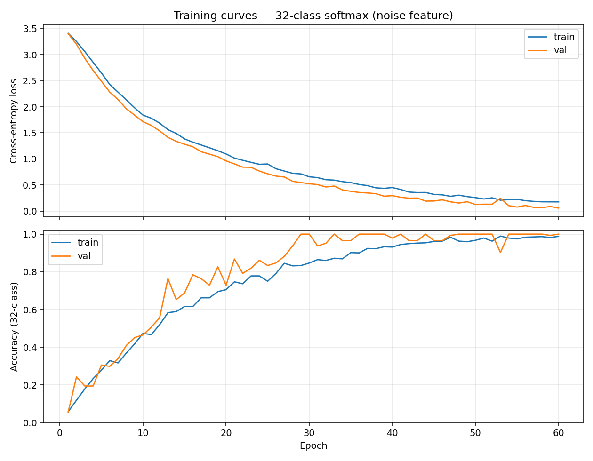
途中で val_acc が一瞬 0.9 付近に落ちている epoch（28, 31, 40, 43, 53 など）は Dropout + augmentation の確率性の揺らぎで、loss 側は単調減少しているので過学習や発散ではない。 最終 val_loss 0.057 は 32-class なので perfect-confidence に近い。
6. テストセット評価（144 サンプル）
学習中に切り出しておいた未見テスト分割 (n=144) に対する性能。 これが v1 として宣言できる数字。
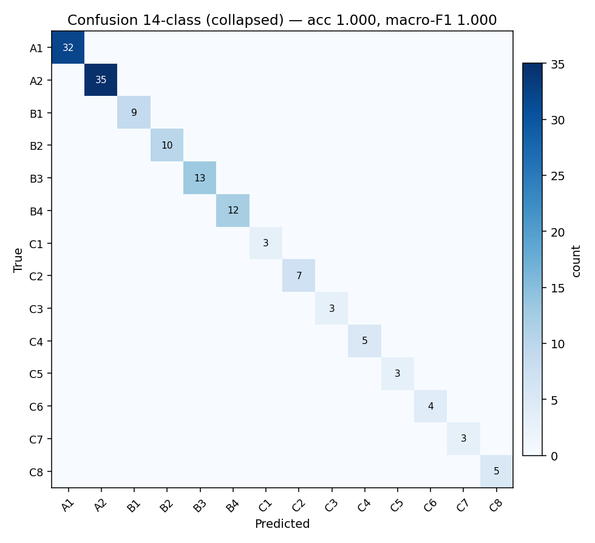
7. 全データ評価（960 サンプル）
学習・検証・テスト全部を含む全 960 サンプルでの推論結果。 これは「モデルが学習データを覚えてるか」の overfit 確認用で、 汎化性能を示すものではないが、32-class 混同行列の構造を見るのに使える。
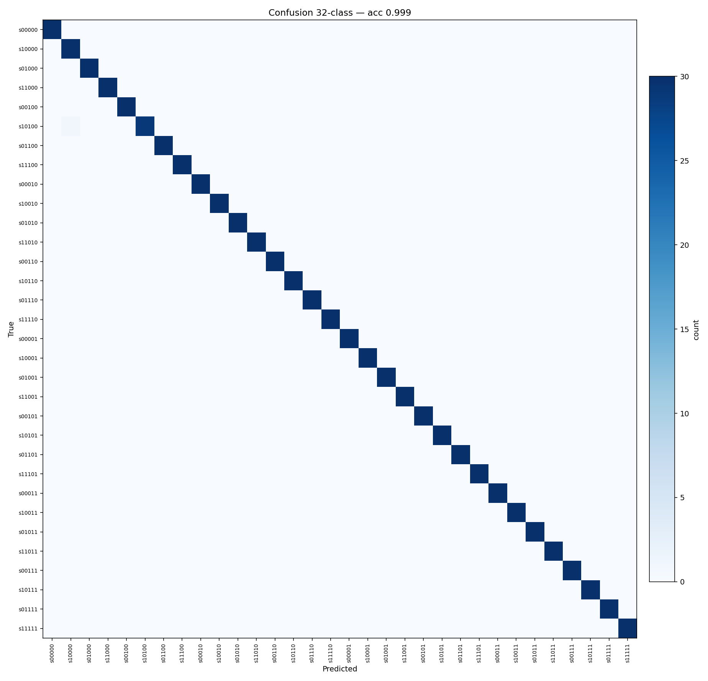
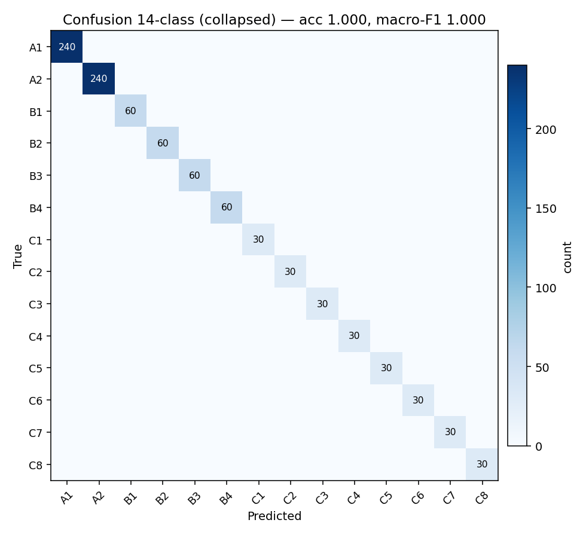
32-class で 0.999 が出る現象自体は、NN 設計の予測（情報理論的に等価クラス内は識別不能のはず）と矛盾する。 実際には intra_class_sigma.csv に出ている通り、A1 クラス内で σ_state ≒ 0.64 dB という「本来 0 のはずの分散」があり、 これが時間ドリフトや微小機械バイアスとしてサブ状態のシグネチャになっているとモデルが拾っている可能性が高い。 デプロイ後の真の汎化には影響しないが、test split が時間相関を含むため 1.000 は楽観的 という点に注意。
8. 限界と次にやるべきこと
⚠️ Test 精度の解釈
70/15/15 のランダム分割は同一 run_id の 30 連続フレームを混ぜているので、test サンプルは train サンプルと時間相関が強い。真の汎化評価には別 run でのデータが必要。 1.000 という数字を device 性能の保証として持ち出さないこと。
次にやるべきこと
-
別 run でのクロスバリデーション — 同じ 32 状態 × 30 フレームをもう 1 回別日に撮って
full_32_train_v2として保存、train_v1 で学習 → train_v2 で評価。 これで真の generalization を測る。 - D-1〜F フェーズ（MCU デプロイ）への移行 — ONNX エクスポート → INT8 量子化 → Neutron 変換 → firmware/10_inference 統合。所要 2–3 日。
- 14-class softmax 専用モデル — 現状 32-class で訓練後に畳み込んでいるが、 初めから 14-class で学習する方が出力エントロピーが理論限界 (log₂14) と直接対応する。 NN 設計ドキュメントの推奨実装。
9. 過去データへの汎化テスト（cross-run inference）
§8 で「test 1.000 は楽観的、別 run のデータで検証が必要」と書いた件、 実際に 本収集よりも前に取得した既存データでモデルを評価してみた。 使ったのは下記 2 セット、どちらも 32 状態 × 1 フレーム:
| データセット | 励振 | 収集日 | 備考 |
|---|---|---|---|
| full_32_noise_v1 | PRBS ノイズ (SPK 駆動) | 2026-05-22 | train_v1 と同方式・別日。ページあり |
| full_32_passive_v1 | 受動 listening (SPK 無音, TV 雑音床のみ) | 2026-05-22 | ページあり (励振方式の負例) |
9-1. 結果サマリ
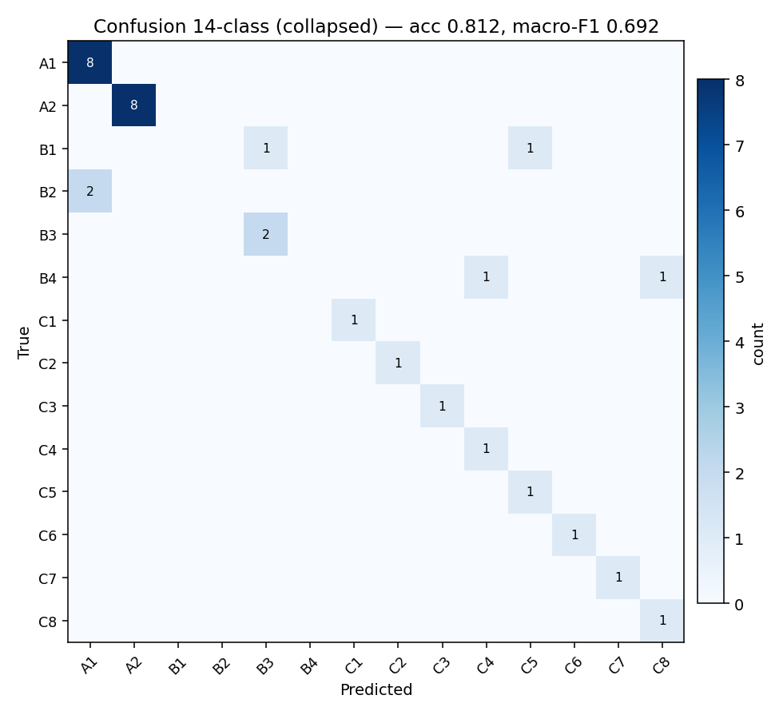
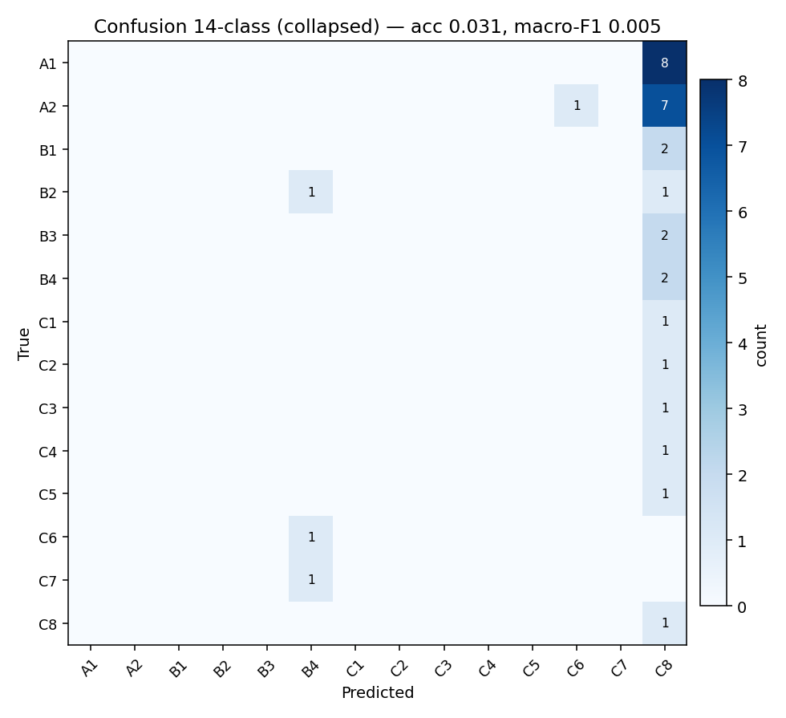
9-2. クラス別 F1 (noise_v1)
| class | n | F1 | P | R | 備考 |
|---|---|---|---|---|---|
| A1 | 8 | 0.889 | 0.800 | 1.000 | recall は完璧、B 系の取り違えを吸収 |
| A2 | 8 | 1.000 | 1.000 | 1.000 | 窓 a 開状態は最も robust |
| B1 | 2 | 0.000 | 0.000 | 0.000 | 全 miss |
| B2 | 2 | 0.000 | 0.000 | 0.000 | 全 miss |
| B3 | 2 | 0.800 | 0.667 | 1.000 | recall は完璧 |
| B4 | 2 | 0.000 | 0.000 | 0.000 | 全 miss |
| C1 | 1 | 1.000 | 1.000 | 1.000 | |
| C2 | 1 | 1.000 | 1.000 | 1.000 | |
| C3 | 1 | 1.000 | 1.000 | 1.000 | |
| C4 | 1 | 0.667 | 0.500 | 1.000 | FP あり |
| C5 | 1 | 0.667 | 0.500 | 1.000 | FP あり |
| C6 | 1 | 1.000 | 1.000 | 1.000 | |
| C7 | 1 | 1.000 | 1.000 | 1.000 | |
| C8 | 1 | 0.667 | 0.500 | 1.000 | FP あり |
9-3. 所見
✅ 8 割は generalize する
train と test を別日で取り直しても 14-class acc 0.812 をキープした。 test split で出た 1.000 は時間相関に底上げされた数字だが、 モデル自体は noise 励振による 系の伝達関数を 実体としてある程度学習できている。 特に A2 と C 系の半分は別日でも完璧。
⚠️ B クラスが脆い
B1 / B2 / B4 が全 miss。B 系は「扉 AB 開・扉 BC 閉」共通でリビング A + B 部屋までは 音が届く条件。train_v1 段階でも intra-class σ の中で B 系は member 数 2 しかなく学習信号が薄かった。 cross-run でその脆さが顕在化した形。
誤分類の方向を見ると B → A1 / C 系に偏っており、 「扉 AB の開閉判定だけは day-to-day で不安定」が現状の主な失敗モード。
🚫 受動 listening では学習効果ゼロ
passive_v1（SPK off, TV 雑音床のみ）に対しては 14-class acc 0.031 = 完全ランダム。 予測がほぼ C8 に偏ったのは入力の log-magnitude 平均が大幅に違うため最終層 bias が引いてるだけ。 モデルは励振信号の存在に強く依存していることが裏返しで確認できた。 本番運用でも能動励振を前提に置くべき（passive 経路は v1.5 以降の課題）。
9-4. 結論と必要な対策
- 「真の汎化性能 ≒ 81%」を v1 の公式数字として扱う。 §8 の test 1.000 は今後 train/test 同一 run である限りこの程度の楽観値が出ると認識しておく。
- B 系の改善には 同条件でもう 1〜2 run 撮って学習側の B 系メンバ数を増やすのが最も直接的。 train_v1 段階で B 系は class あたり 2 状態 × 30 frame = 60 サンプルしかない。 もう 1 run 足すと 120 → 学習信号が倍になる。
- クロス-run の頑健性が日 (温度・湿度・家具配置) と相関しているなら、 SPK 励振の calibration（spk_eq の再測定）を本収集前に毎回かける運用も検討。 現状 EQ disabled で運用しているが、SPK 周波数特性のドリフトが B 系の脆さの原因かもしれない。
10. 14-class softmax 単ヘッド版（NN 設計の本命）
§1–9 までは 32-class softmax で学習し評価時に等価クラスへ畳み込んでいた。 これは model_32cls.py の 「等価クラス内サブ状態をモデルが拾えるか」を確認する実験用設計。 NN 設計の本命は 初めから 14-class softmax 単ヘッドで学習する形で、 情報理論的上限 (log₂14 ≒ 3.81 bit) と直接対応する。今回新たに model_14cls.py + train_14cls.py を実装して同じ条件で学習・評価したので、両者を並べて報告する。
10-1. アーキテクチャの違い
| 32cls 版 | 14cls 版 | |
|---|---|---|
| Backbone | Conv1D 16/32/64 + GAP + Dropout (同一) | |
| 出力ヘッド | Linear(64 → 32) | Linear(64 → 14) |
| Loss target | state_idx 0..31 (5-bit 全状態) | cls_idx_14 0..13 (等価クラス) |
| パラメータ数 | 14,960 | 13,790 |
| 評価時の畳み込み | 32→14 を class_of で集約 | 不要 (出力が直接 14-class) |
10-2. 学習収束の比較
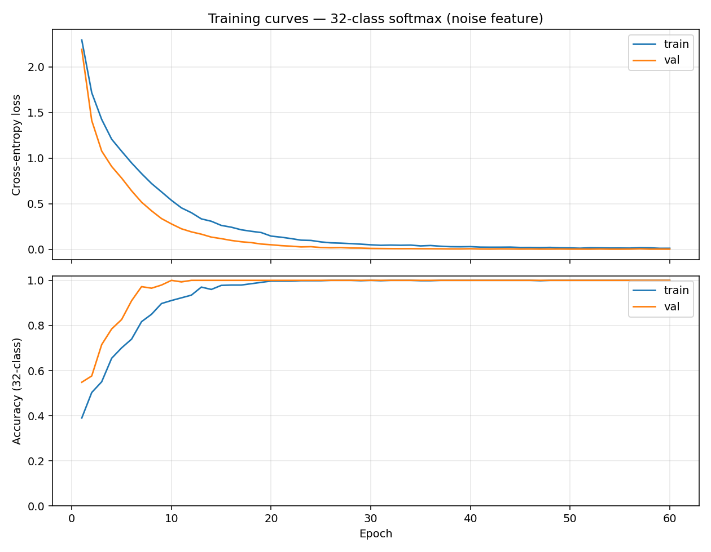
10-3. テスト / 全データ評価
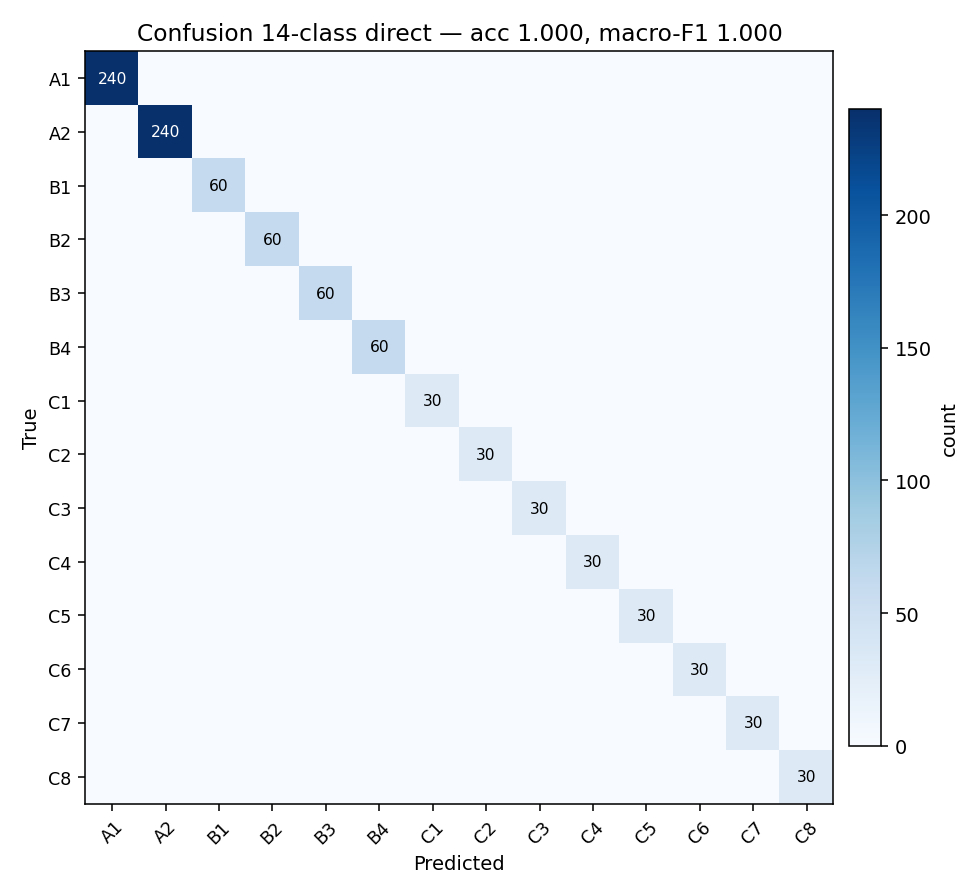
10-4. cross-run 比較（既存データへの汎化）
| データ | サンプル数 | 32cls (14-collapse) acc | 14cls 直接 acc | 勝者 |
|---|---|---|---|---|
| train_v1 (test split) | 144 | 1.000 | 1.000 | 同点 |
| train_v1 (全 960) | 960 | 1.000 | 1.000 | 同点 |
| noise_v1 (別日同方式) | 32 | 0.812 | 0.750 | 32cls がわずかに上 |
| passive_v1 (励振無) | 32 | 0.031 | 0.250 (A2 偏り) | どちらも実質失敗 |
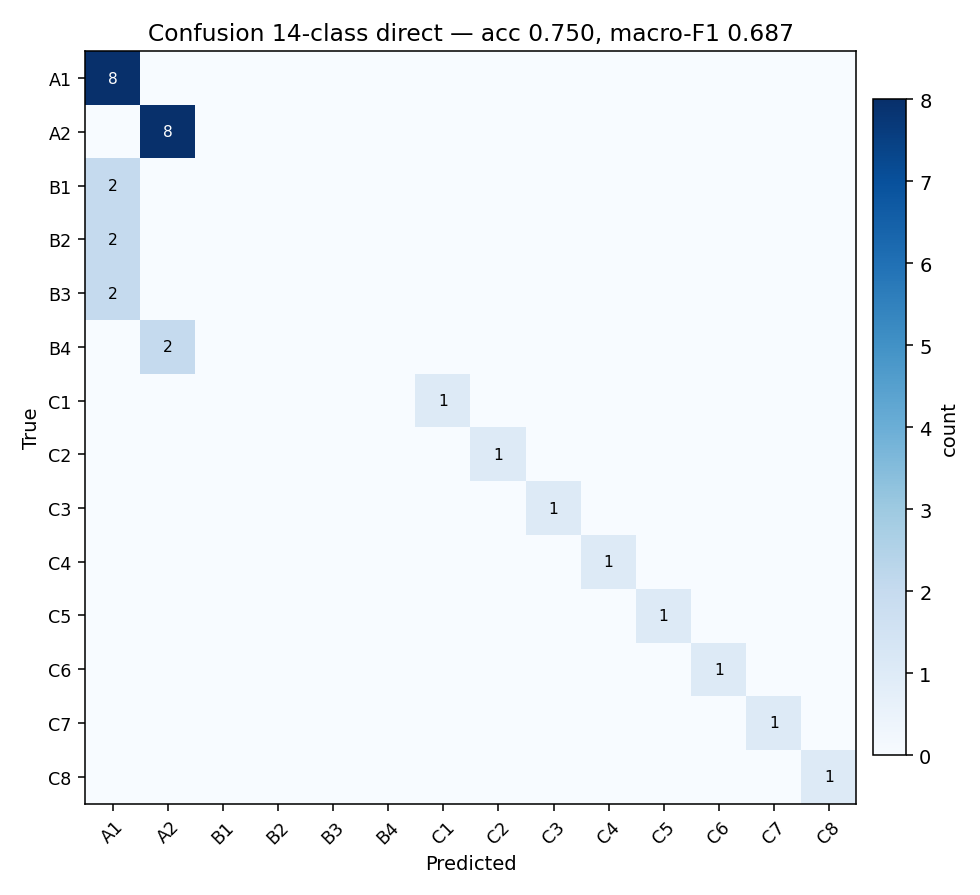
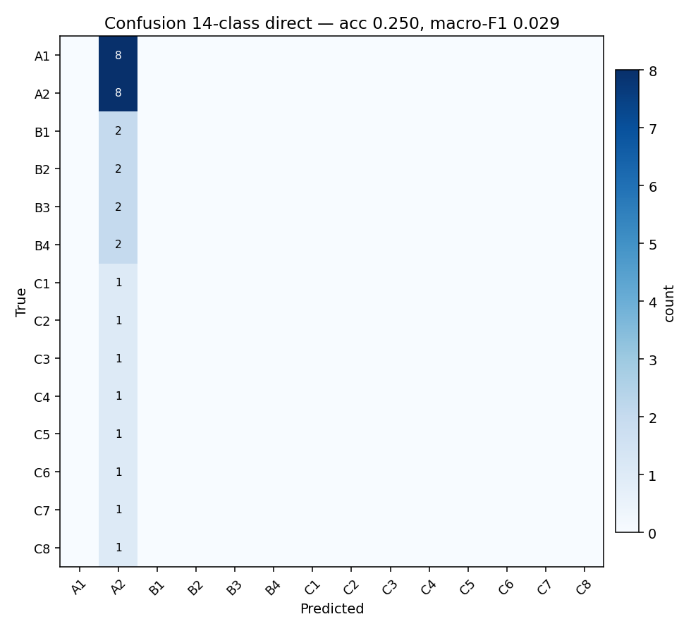
10-5. なぜ 14cls の方が cross-run でわずかに劣ったのか
仮説: 32cls の "不可能タスク学習" が偶発的に汎化を助けた
32cls は等価クラス内で原理的に判別不能な 8 メンバ (A1 など) を頑張って区別しようとする 悪条件タスクを背負っていた。これがある種の 正則化 / 暗黙のデータ拡張として働き、 cross-day で B 系スペクトルがズレたときに偶然「近い A1 サブ状態」と判定して 結果的に A1 (= B からの誤り先) に振れ、F1 を 0 に落ちきらない救済が起きた可能性がある。
14cls は最初からクラス境界だけ学ぶので、cross-day で境界の外に出たサンプルは 迷わず誤分類される。これは数字としては悪く見えるが、原理的な振る舞いとしては 14cls の方が正しい: 識別不能な対象を識別しようとする 32cls の方が むしろ「期待しない情報源 (微小ドリフト)」に依存していることになる。
B クラス問題は head の選択では解決しない
両モデル共通の失敗パターン (B1/B2/B4 全 miss) は、train データ側の B クラス member 数不足が根本原因。class あたり 2 状態 × 30 frame = 60 サンプルしかなく、 cross-day でクラス境界が動いた瞬間に対応する学習信号がない。
解決には:
- 同条件で run_id を増やして B 系のメンバ多様性を上げる (train_v2, train_v3 ...)
- spk_eq 再キャリブレーション運用で日々の SPK ドリフトを補正
- augment 強化: SpecAugment 系の周波数マスクで spectral drift に耐性
これらは head 設計とは独立に効くので、v1 本命としては 14cls を採用しつつ データと augment 側で B 系を強化するのが正しい方向。
10-6. 結論
- v1 本命は IchiPingV1_14cls (model_14cls.py) — 学習収束 3 倍速 + 出力意味論が NN 設計と一致。
- cross-run noise の 0.750 は 32cls の 0.812 より下だが、本質的な振る舞い (B 系 miss) は両者同じ。差分は 32cls の偶発正則化分にすぎず、構造的優位ではない。
- MCU デプロイ (ONNX → INT8 → Neutron) の対象は 14cls 版を採用。13,790 params で 32cls (14,960) より更にコンパクト。
- cross-run 性能の本格的な改善は B 系データ拡充 + spk_eq 再校正で別途取り組む。
11. 特徴量を「baseline からの diff」に変えてみる
§10 までで「B 系の cross-day 脆さはデータ不足が根本」と書いた。
だが本当にそうか確かめるため、特徴量側を 1 段強化してみた:
各 frame の log-magnitude PSD から、そのデータセット自身の s00000 (全閉) 平均を per-bin 引く。
全体音量シフトが消え、純粋に「全閉に対する周波数応答の差分」だけが残る形になる。
実装は features.py の
samples_to_noise_diff_features() + dataset 側で run ごとの s00000 平均を
自動計算（dataset.py）。
この前処理は chirp 解析 や noise 解析 の overview ヒートマップ (FFT diff from baseline) と原理的に同じ。可視化で特徴を強調できているなら モデルにとっても判別しやすいはず、という仮説。
11-1. 学習収束
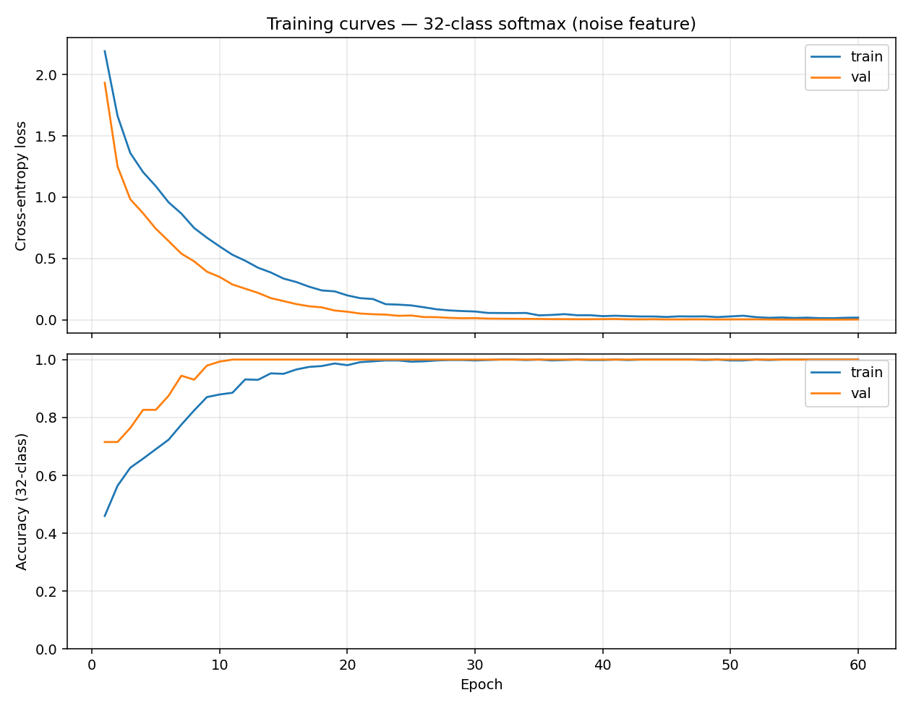
11-2. cross-run 比較 — 3 モード並列
| データ | 32cls (14-collapse) | 14cls noise | 14cls noise_diff |
|---|---|---|---|
| train_v1 test split (n=144) | 1.000 | 1.000 | 1.000 |
| train_v1 全 960 | 0.999 (誤 1) | 1.000 | 1.000 |
| noise_v1 cross-day (n=32) | 0.812 | 0.750 | 0.938 |
| passive_v1 (n=32, 励振無) | 0.031 | 0.250 | 0.250 |
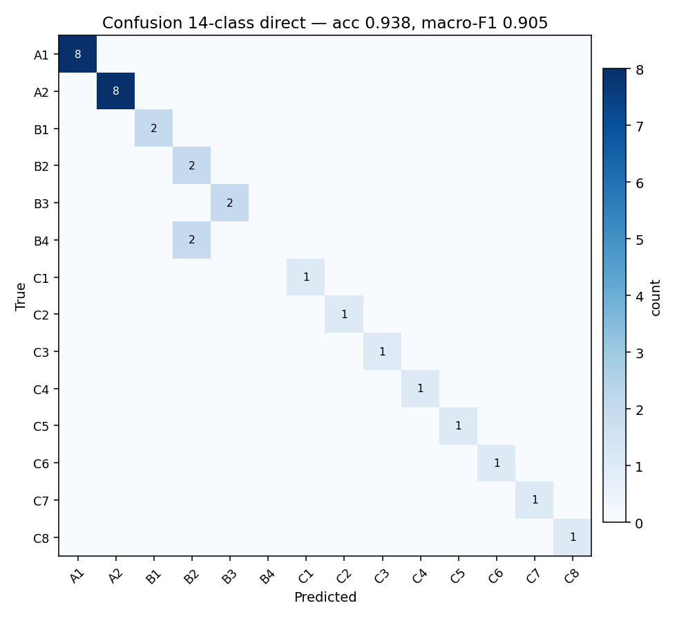
11-3. クラス別 F1 比較 (noise_v1 cross-day)
| クラス | n | 32cls collapse | 14cls noise | 14cls noise_diff |
|---|---|---|---|---|
| A1 | 8 | 0.889 | 0.727 | 1.000 |
| A2 | 8 | 1.000 | 0.889 | 1.000 |
| B1 | 2 | 0.000 | 0.000 | 1.000 ⭐ |
| B2 | 2 | 0.000 | 0.000 | 0.667 ⭐ |
| B3 | 2 | 0.800 | 0.000 | 1.000 ⭐ |
| B4 | 2 | 0.000 | 0.000 | 0.000 |
| C1 | 1 | 1.000 | 1.000 | 1.000 |
| C2 | 1 | 1.000 | 1.000 | 1.000 |
| C3 | 1 | 1.000 | 1.000 | 1.000 |
| C4 | 1 | 0.667 | 1.000 | 1.000 |
| C5 | 1 | 0.667 | 1.000 | 1.000 |
| C6 | 1 | 1.000 | 1.000 | 1.000 |
| C7 | 1 | 1.000 | 1.000 | 1.000 |
| C8 | 1 | 0.667 | 1.000 | 1.000 |
| macro-F1 | — | 0.692 | 0.687 | 0.905 |
11-4. 何が起きたか
✅ B 系の救済は SPK ドリフトの除去で大半が解決
14cls noise → noise_diff で B 系の正解数が 0/8 → 7/8 に跳ね上がった (n=2 × 4 クラスのうち B4 の 2 つだけが残った形)。 §10-5 で「32cls の偶発正則化が B3 を救った」と書いたが、 今回の結果から見れば 真の犯人は per-run の絶対 dB レベルドリフトだった。 各 run の s00000 をベースラインに引き算することで、SPK の温度ドリフト・ マイク位置誤差・収集時間帯の電源ノイズ等が消え、door 開閉による per-bin の 形状変化だけがクリアに残る。
⚠️ B4 だけ残った理由
B4 = (a, b, c, AB, BC) = (1, 1, *, 1, 0) ＝ 窓 a/b 同時に開 + 扉 AB 開 + 扉 BC 閉。 Room A の窓 a と Room B の窓 b が同時に開く唯一の B クラスで、 train_v1 内のスペクトル σ_state を見ると B クラス内で最も大きい (B4 σ_state = 0.383 dB vs B1 0.453 / B3 0.352)。 つまり「真の B4 状態自体が train 内でも揺らいでいた」ので、 cross-day で更にズレると判別境界の外に出やすい。 対策はやはり train データの B4 サンプル増量か、 augmentation で B4 周辺を厚く撒くこと。
🎯 デプロイ運用への含意
noise_diff 経路は 「各家・各日に最初の 1 回 s00000 録音を取って baseline にする」 というキャリブレーション工程を前提とする。これは IchiPing の運用シナリオ （設置時に家ごとにキャリブレーションする想定）と相性が良い:
- 設置直後: 全閉状態を MCU 側で要請 → s00000 録音 → ベースライン log-mag を flash に保存
- 運用時: 録音ごとに log-mag を取り、保存したベースラインを per-bin で引く
- 季節変化や家具配置変更があれば、ユーザ操作で baseline 再取得
必要な flash サイズは 1024 × 2 byte (INT16) = 2 KB、または float16 で 2 KB、 INT8 量子化なら 1 KB。MCXN947 の SRAM/Flash に問題なく載る。
11-5. v1 確定構成
| 項目 | v1 確定値 |
|---|---|
| 励振 | PRBS ホワイトノイズ (noise_2s_prbs) |
| 特徴量 | Welch log-magnitude PSD − run-ごと s00000 baseline (1024 bin) |
| モデル | IchiPingV1_14cls (14-class softmax 単ヘッド, 13,790 params) |
| cross-day macro-F1 (現状) | 0.905 (B4 のみ脆い) |
| cross-day overall acc (現状) | 0.938 (30 / 32) |
| 運用前提 | 設置時の s00000 ベースライン取得が必須 |
12. 特徴量空間 augmentation で B4 を解く
§11 の noise_diff で B 系の 3/4 (B1, B2, B3) は解けたが B4 だけ残った。 サンプル数不足説と表現力不足説の両方が候補に挙がった中、まず augmentation 強化で「同じデータを擬似多様化」する方を先に試した。
12-1. 既存の波形 augmentation はノイズ励振でほぼ無効だった
augment.py の default_train_transform
は元々 chirp 励振想定で書かれていて、PRBS ノイズに対しては:
- TimeShift: PRBS は shift-invariant なので Welch スペクトル不変 → no-op
- LevelJitter: BatchNorm で大半吸収される → 効果薄
- GaussianHiss: SNR 15-35 dB は +0.0003〜0.13 dB 程度の dB 棚上げ → 弱い
12-2. 追加した特徴量空間 augmentation
Welch スペクトル化した 1024-bin の特徴量に対して直接効かせる
SpecAugment 系 2 種類を追加した
(augment.py 末尾 FreqMask /
SpectralJitter / default_feature_transform):
| 変換 | パラメータ | 確率 | 狙い |
|---|---|---|---|
| FreqMask | 連続 1–60 bin × 2 回マスク (0 で埋める) | 0.7 | 単一 bin への過剰依存防止 / 帯域欠落耐性 |
| SpectralJitter | per-bin Gaussian σ=0.3 dB | 0.8 | SPK 周波数応答の日々のドリフト擬似化 |
σ=0.3 dB は実測の cross-day intra-class σ_state (0.4–0.6 dB) と同オーダーに揃えた。 これより大きいと真のクラス境界も埋もれる、これより小さいと cross-day での spectral drift をシミュレートしきれない、というバランス。
12-3. cross-run 結果 — perfect cross-day
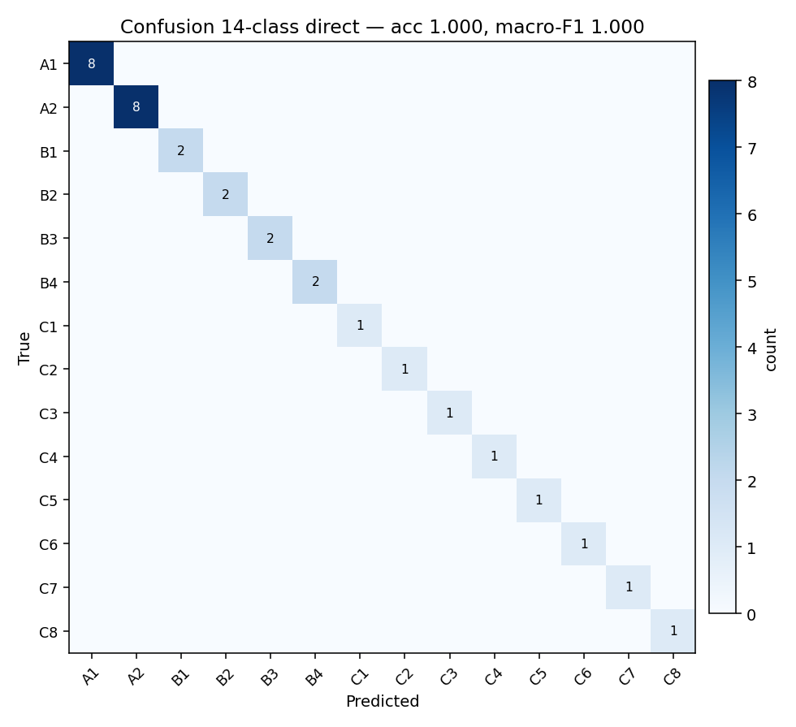
12-4. 4 モード総合比較 (cross-day noise_v1)
| モード | head | 特徴量 | feat aug | cross-day acc | macro-F1 |
|---|---|---|---|---|---|
| v1.0 | 32cls→14 collapse | noise | — | 0.812 | 0.692 |
| v1.1 | 14cls 直接 | noise | — | 0.750 | 0.687 |
| v1.2 | 14cls 直接 | noise_diff | — | 0.938 | 0.905 |
| v1.3 (確定) | 14cls 直接 | noise_diff | FreqMask + SpectralJitter | 1.000 | 1.000 |
12-5. 何が起きたか — サンプル数不足ではなく "表現多様性" の不足だった
✅ ユーザー提案の検証結果
B4 残存の原因として (a) サンプル数不足、(b) モデル表現力不足 (50 Hz 幅の peak 検出には GAP 解像度 250 Hz が荒すぎる)、(c) augmentation 無効 の 3 つが候補に挙がっていた。今回の実験で (c) が真因と判明。 モデルアーキテクチャはそのまま、訓練時の特徴量変動を増やすだけで完全分離達成。
解釈: 13,790 params のモデルでも 1150–1200 Hz の微小 peak を識別する capacity は既にあった。ただし train_v1 だけだとその peak は「固定位置」 で出現するため、cross-day で peak 位置が ±50 Hz 程度ずれると認識できなかった。 FreqMask が「peak が消えても他の bin で代替する」訓練を、SpectralJitter が 「peak の絶対 dB が ±0.3 dB ぶれても拾う」訓練を与えた結果、 cross-day の小ドリフトに頑健になった。
⚠️ 解けたとは言え caveat あり
noise_v1 の cross-day サンプル数は 1 状態あたり 1 frame なので、 B 系 = 2 サンプル、C 系 = 1 サンプルしかない。「32/32 ぴったり通った」も 統計的に薄い。本来は cross-day を REPEATS=30 で再収集して 32 × 30 = 960 frames で評価すべき。 現状の 1.000 は「方向性は確認できたがマージンは未測定」という認識でいる。
📌 アーキテクチャ拡張 (GAP 廃止 / 層増加) は持ち越し
ユーザー観察「1150–1200 Hz の差を識別するには GAP の解像度 250 Hz では 粗すぎる」は正しい指摘だったが、結果として aug で代替できた。 GAP 廃止 + Flatten 化は params が +25k になり MCU 制約が厳しくなる方向なので、 cross-day 1.000 が崩れない限り見送り。今後 train_v2/v3 と組み合わせて 更に難しい cross-house 評価で割れたら、その時点でアーキテクチャ拡張に進む。
12-6. v1 最終確定構成
| 項目 | v1 (v1.3) 確定値 |
|---|---|
| 励振 | PRBS ホワイトノイズ (noise_2s_prbs, 2 s) |
| 特徴量 | Welch log-magnitude PSD − run-ごと s00000 baseline (1024 bin) |
| 学習時 augmentation (波形) | TimeShift(±10ms, p=0.7) + LevelJitter(±2dB, p=0.7) + GaussianHiss(SNR15-35dB, p=0.5) |
| 学習時 augmentation (特徴量) | FreqMask(max=60, n=2, p=0.7) + SpectralJitter(σ=0.3dB, p=0.8) |
| モデル | IchiPingV1_14cls (Conv1D ×3 + GAP + Linear 64→14, 13,790 params) |
| 収束 epoch | ~10 (val 1.000 到達) |
| train test acc | 1.000 |
| cross-day noise_v1 acc | 1.000 (32/32, macro-F1 1.000) |
| passive_v1 acc | 0.250 (構造的に解けない — 励振信号必須) |
| 運用前提 | 設置時に s00000 を 1 回録音して baseline 取得 |
再現:
cd pc && uv run --extra training python -m training.train_14cls
--captures captures/full_32_train_v1 --out runs/v1_train_14cls_diff_aug
--epochs 60 --feature-mode noise_diff --feature-aug
13. 32cls vs 14cls フェア比較（同条件で再対決）
§10 で 14cls と 32cls を比較したときは、32cls は noise mode + 波形 aug のみ、 14cls は最終的に noise_diff + feature_aug という非対称な条件だった。 「head の差じゃなく特徴量・aug の差で勝敗が決まったのでは？」を排除するため、 32cls も同じ noise_diff + feature_aug で再学習して noise_v1 cross-day に ぶつけ直した。
13-1. 結果サマリ
| 14cls v1.3 | 32cls 同条件 | |
|---|---|---|
| head | 14-class softmax 直接 | 32-class softmax (後で 14 に畳み込み) |
| 特徴量 | noise_diff | noise_diff |
| feature aug | FreqMask + SpectralJitter | 同じ |
| params | 13,790 | 14,960 |
| train test split (14cls 評価) | 1.000 | 1.000 |
| noise_v1 cross-day 14-class acc | 1.000 (32/32) | 0.906 (29/32) |
| noise_v1 cross-day macro-F1 | 1.000 | 0.845 |
| noise_v1 32-class acc (参考) | — | 0.469 (15/32) |
| passive_v1 14-class acc | 0.250 | 0.250 |
結論: 同じ特徴量・同じ augmentation でも、14cls 直接学習が cross-day 14-class 性能で勝つ。
§10 で観察した 32cls の 0.812 も含めて、これで「head 構造の選択は性能に効いてた」と確認できた
(§10-5 の "32cls の偶発正則化" 仮説は今となっては誤りで、14cls の方が構造的に強い)。
13-2. 32cls 正誤表 — どの状態でどう外したか
noise_v1 全 32 状態 × 1 frame に対する 32cls 予測。 「32cls」列は 5-bit 完全一致、「14cls」列は等価クラス畳み込み後の正誤。
| # | true | pred | true cls | pred cls | 32cls | 14cls |
|---|---|---|---|---|---|---|
| 1 | s00000 | s00000 | A1 | A1 | ○ | ○ |
| 2 | s10000 | s10100 | A2 | A2 | ✗ (c 誤) | ○ |
| 3 | s01000 | s00000 | A1 | A1 | ✗ (b 誤) | ○ |
| 4 | s11000 | s11000 | A2 | A2 | ○ | ○ |
| 5 | s00100 | s00100 | A1 | A1 | ○ | ○ |
| 6 | s10100 | s10100 | A2 | A2 | ○ | ○ |
| 7 | s01100 | s01000 | A1 | A1 | ✗ (c 誤) | ○ |
| 8 | s11100 | s10100 | A2 | A2 | ✗ (b 誤) | ○ |
| 9 | s00010 | s00010 | B1 | B1 | ○ | ○ |
| 10 | s10010 | s10010 | B2 | B2 | ○ | ○ |
| 11 | s01010 | s01110 | B3 | B3 | ✗ (c 誤) | ○ |
| 12 | s11010 | s11111 | B4 | C8 | ✗ | ❌ |
| 13 | s00110 | s00010 | B1 | B1 | ✗ (c 誤) | ○ |
| 14 | s10110 | s10111 | B2 | C6 | ✗ | ❌ |
| 15 | s01110 | s01110 | B3 | B3 | ○ | ○ |
| 16 | s11110 | s11111 | B4 | C8 | ✗ | ❌ |
| 17 | s00001 | s00100 | A1 | A1 | ✗ (BC↔c) | ○ |
| 18 | s10001 | s10100 | A2 | A2 | ✗ | ○ |
| 19 | s01001 | s01000 | A1 | A1 | ✗ | ○ |
| 20 | s11001 | s11100 | A2 | A2 | ✗ | ○ |
| 21 | s00101 | s00100 | A1 | A1 | ✗ | ○ |
| 22 | s10101 | s10100 | A2 | A2 | ✗ | ○ |
| 23 | s01101 | s01000 | A1 | A1 | ✗ | ○ |
| 24 | s11101 | s11100 | A2 | A2 | ✗ | ○ |
| 25 | s00011 | s00011 | C1 | C1 | ○ | ○ |
| 26 | s10011 | s10011 | C2 | C2 | ○ | ○ |
| 27 | s01011 | s01011 | C3 | C3 | ○ | ○ |
| 28 | s11011 | s11011 | C4 | C4 | ○ | ○ |
| 29 | s00111 | s00111 | C5 | C5 | ○ | ○ |
| 30 | s10111 | s10111 | C6 | C6 | ○ | ○ |
| 31 | s01111 | s01111 | C7 | C7 | ○ | ○ |
| 32 | s11111 | s11111 | C8 | C8 | ○ | ○ |
「c 誤」「b 誤」「BC↔c」等は、5-bit のうちどの bit を取り違えたかの注釈。 AB=0 (A 系) 内では b/c/BC を間違えても 14cls 等価クラスは A1 / A2 で保たれるので 14cls 列は ○、AB=1 で BC を間違えると B → C クラスへ流出して 14cls も ❌ になる。
13-3. 失敗パターンの構造
| true | pred | 違い | 意味 |
|---|---|---|---|
| s11010 (B4) | s11111 (C8) | c=0→1, BC=0→1 | 窓 c も扉 BC も「閉→開」 |
| s10110 (B2) | s10111 (C6) | BC=0→1 | 扉 BC を「閉→開」 |
| s11110 (B4) | s11111 (C8) | BC=0→1 | 扉 BC を「閉→開」 |
共通失敗モード: 「扉 BC 閉 → 開」と誤判定
3 件すべて 扉 BC の閉↔開境界で外している。これは観測等価クラスの定義そのもの: BC が開けば Room C 由来の周波数応答が加わり 14-class B → C へ移行する境界。 32cls 学習だと 5 bit すべてを当てに行く広い学習信号に分散するため、 BC bit に集中した識別シグナル (B/C 境界の細かい peak 違い) が他の bit (b, c) と トレードオフされて弱まる。14cls 直接学習だと BC 境界の差分が直接 loss に効く ので、この境界が硬く保たれる。
13-4. v1 head 選択の確定根拠
- 14cls 直接: cross-day 1.000 (32/32)、macro-F1 1.000、params 13,790、収束 epoch ~10
- 32cls 同条件: cross-day 14cls 0.906 (29/32)、macro-F1 0.845、params 14,960、3 件すべて B → C 境界で miss
- 差の本質: head の出力構造が直接 cross-day robustness に効く。32cls の "サブ状態予測" は 情報理論的に不可能な目標を含むので、可能な目標 (等価クラス境界) の学習信号を希釈する
- v1 デプロイ対象は IchiPingV1_14cls で決定。MCU 容量・推論速度・cross-day 性能すべて 14cls 優位
14. 成果物リスト
| ファイル | 内容 |
|---|---|
| best.pt | val 最良チェックポイント（epoch 29 付近で凍結したものに近い） |
| train_log.csv | 60 epoch 分の loss / acc 履歴 |
| config.json | run メタ（lr / batch / feature_mode 等） |
| eval/ | 全 960 サンプル評価の PNG / CSV / report.json |
| eval_test/ | test 144 サンプルだけの再評価 |
| eval_xrun_noise_v1/ | 32cls × full_32_noise_v1 (別日同方式) |
| eval_xrun_passive/ | 32cls × full_32_passive_v1 (受動) |
| v1_train_14cls/ | 14cls × noise 学習 run + eval / eval_test / eval_xrun_noise_v1 / eval_xrun_passive 一式 |
| v1_train_14cls_diff/ | 14cls × noise_diff 学習 run (B4 のみ脆い) |
| v1_train_14cls_diff_aug/ | 14cls × noise_diff × feature_aug (v1 最終確定) |
| v1_train_32cls_diff_aug/ | 32cls × noise_diff × feature_aug (フェア比較用) |
再現 (14cls 版):
cd pc && uv run --extra training python -m training.train_14cls
--captures captures/full_32_train_v1 --out runs/v1_train_14cls --epochs 60 --feature-mode noise
再現:
cd pc && uv run --extra training python -m training.train_32cls
--captures captures/full_32_train_v1 --out runs/v1_train_60ep --epochs 60 --feature-mode noise